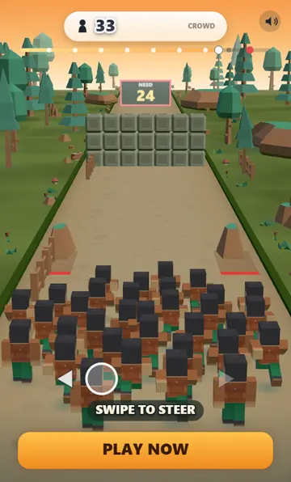
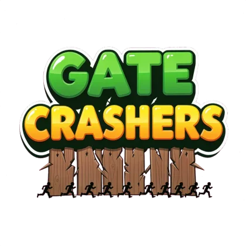
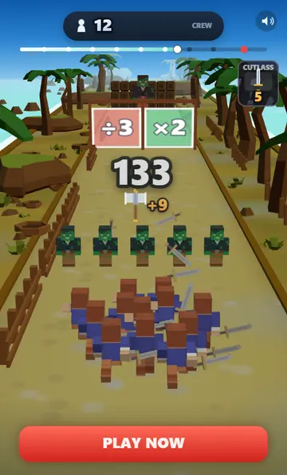
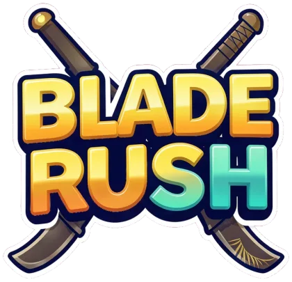
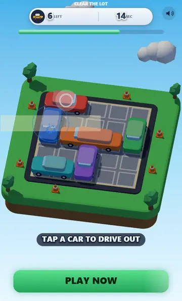
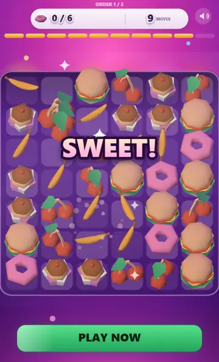
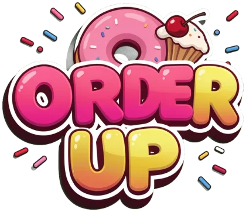
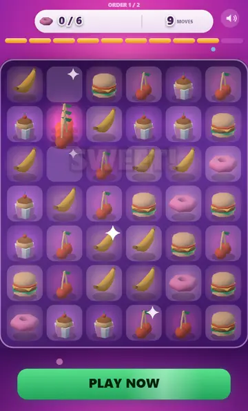

▶Click to playGate Crashers
3D runner · Three.js
794.7 KB
3D & 2D playable ad units


▶Click to play3D runner · Three.js
794.7 KB


▶Click to play3D action runner · Three.js
893.3 KB

▶Click to playBlock puzzle · Three.js
951.3 KB
Same game, built twice
One mechanic ships in both renderers with the art held constant — the flat sprites are rendered from the very models the 3D unit puts on screen. Logic, layout, HUD and animation curves are one shared file, and a scripted playthrough of the pair produces byte-identical results. Only the drawing differs, so the gap between the two sizes is the renderer and nothing else.


▶Click to playThree.js
697.7 KB

▶Click to playCanvas 2D
50.4 KB
Packages
What actually ships to a network: one HTML file, zipped where the network wants a zip. Every unit is packaged for ten networks; four of them are here to download.
| Unit | Size | Download |
|---|---|---|
| Gate Crashers | 794.7 KB | google ironsource mintegral tiktok |
| Blade Rush | 893.3 KB | google ironsource mintegral tiktok |
| Valet Panic | 951.3 KB | google ironsource mintegral tiktok |
| Order Up 3D | 697.7 KB | google ironsource mintegral tiktok |
| Order Up | 50.4 KB | google ironsource mintegral tiktok |
Contact
I build playable ad units as single HTML5 files — game logic, both renderers, the asset pipeline and the per-network packaging. I came to this from 2D game art and UI design, which is why the units are art-directed as well as engineered.